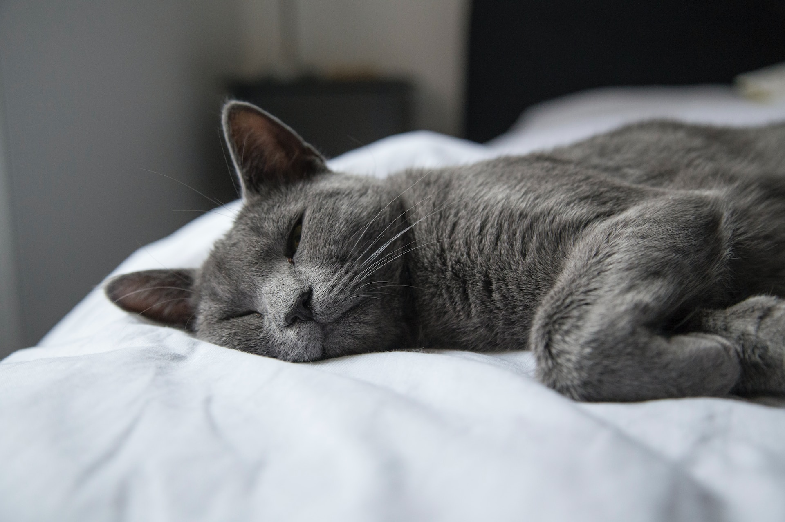

러시아의 아르한겔스크 제도에서 유래해 영국의 종 개량을 통해 만들어진 종.
러시아 황실, 영국의 빅토리아 여왕이 키운 고양이의 후손이라고도 한다. 1875년 '아칸젤 고양이'라는 이름으로 소개되었다. 소개될 당시에는 당시 유행을 따라 샴, 브리티시 종과 닮도록 교배되었는데,이후 아칸젤 고양이의 원형을 복구하고자 많은 사람들이 노력하였고, 1912년 러시안 블루로서 독자적 종으로 인정받아 현재까지 이어온다.
품종명에 들어가는 '블루'는 고양이의 털색을 말한다. 품종명을 해석하자면 러시아의 진한 회색 고양이. 그래서 러시안 블루는 회색털만 있다.
